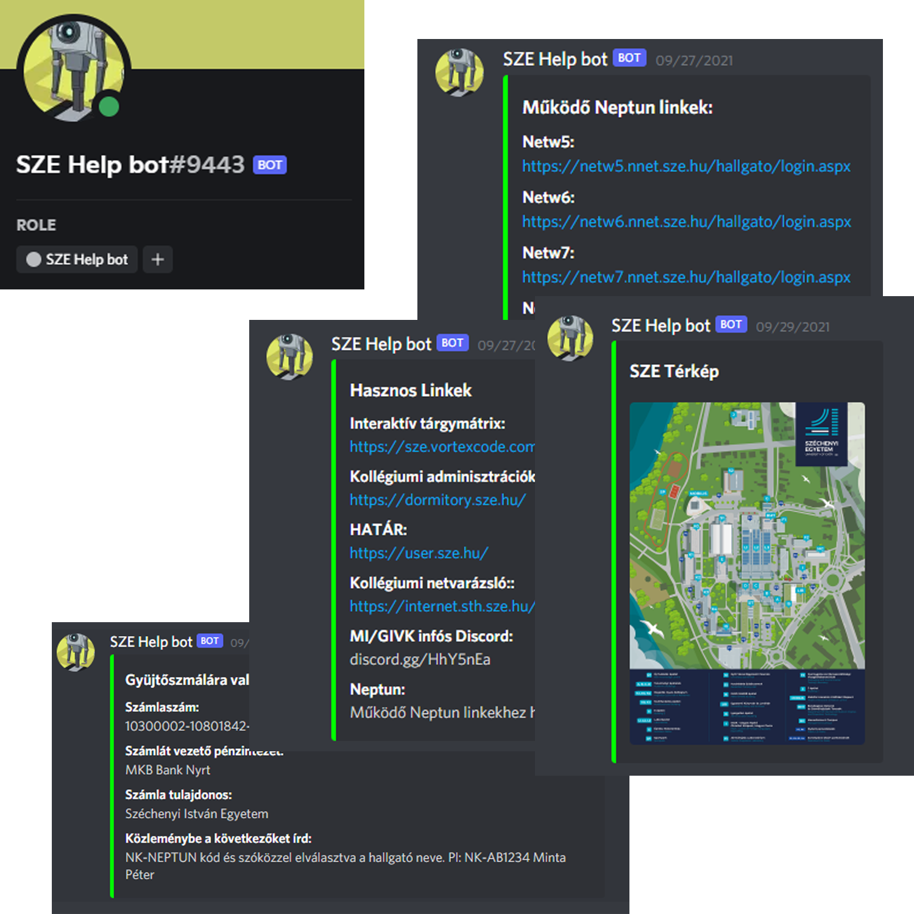

Add hozzá Discord szerveredhez a Széchenyi István Egyetem Segítő Botját
- ügyintézéssel kapcsolatos információk nyújtása pl.: TO ügyintézők elérhetősége
- tájékozódásban segítő térképek nyújtása
- linkgyűjtemény megosztása pl.: működő neptun linkek, tárgyfelvételi mátrix stb.
- fontosabb dátumok megosztása pl.: tárgyfelvétel, tanszünet